Efficient AI
Блок 2. Нейронные сети. Введение


Где мы?
- Вводная
- Блок 1
- Блок 2
- 1 мая
- 9 мая
- Блок 3
- Экзамен
Содержание
- Задача классификации и нейронные сети
- Специальные слои в линейных слоях
- Как создавать нейронные сети?
Что такое классификация
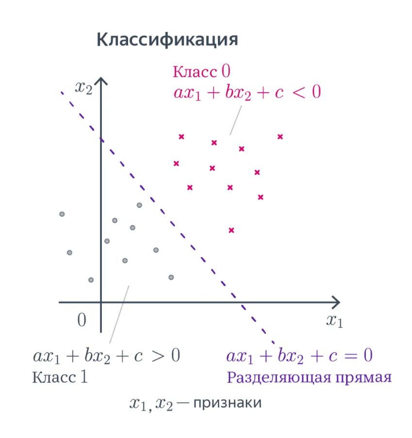
Представление входных данных
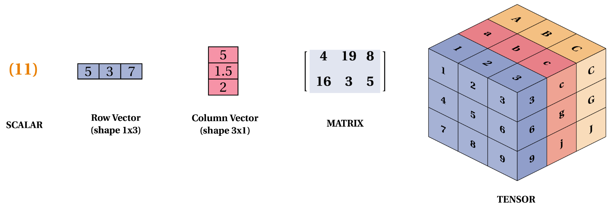Сложный случай
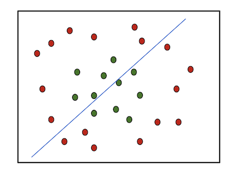

Биологический нейрон и модель искусственного нейрона. Перцептрон (Ф. Розенблатт 1960)
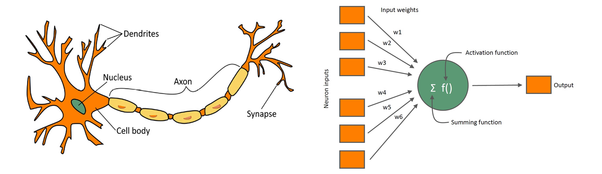
Зачем нам нужно нелинейное пробрезование?
Сеть с одним скрытым слоем
Теорема Цыбенко (1989). Универсальная теорема аппроксимации. Любую непрерывную на компакте функцию можно равномерно приблизить нейронной сетью с одним скрытым слоем.
Нелинейная классификация и MLP
Функции активаций
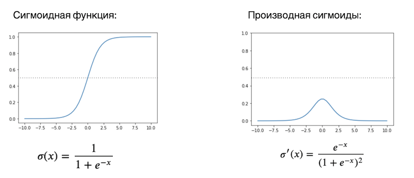 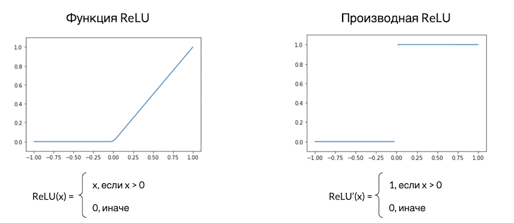Глубокое обучение

Специальные слои в линейных слоях
- Полносвязный слой (Fully Connected Layer, или Dense Layer)
- Свёрточный слой (Convolution Layer)
- Рекуррентный слой(RNN)
- Нормализующий слой (Normalization Layer)
- Слой подвыборки (Pooling Layer)
- Слой внимания (Attention Layer)
Свёртки
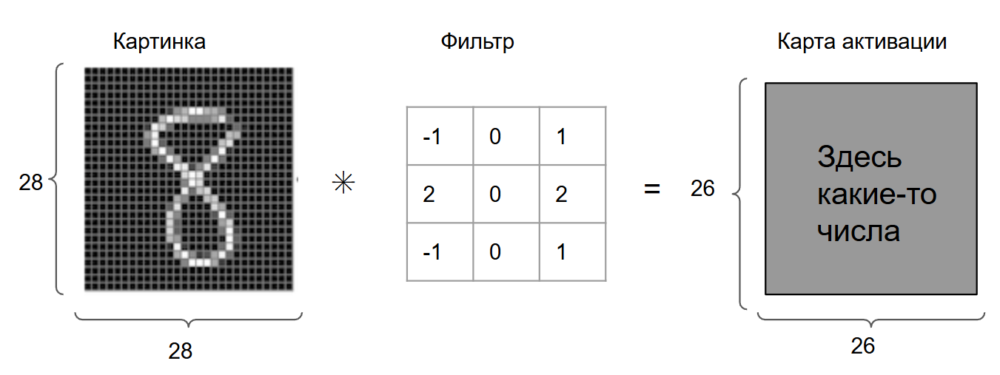Определение свёртки
 Для изображения I и ядра K размером m * n:
Для изображения I и ядра K размером m * n:
$$ I * K (x, y) = \sum_{i=0}^{m-1} \sum_{j=0}^{n-1}I(x+i, y+j) \cdot K(i,j) $$
Общая формула размера карты активации такая: m=i−f+1, где: m — размер карты активации; i — размер изображения; f — размер фильтра.Свёртки
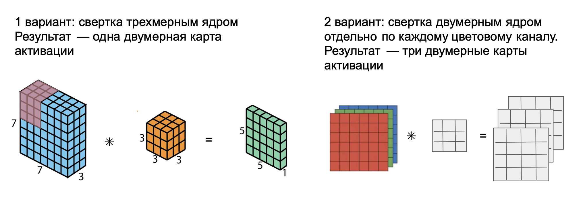Перерыв
Полносвязная сеть для работы с изображениями.
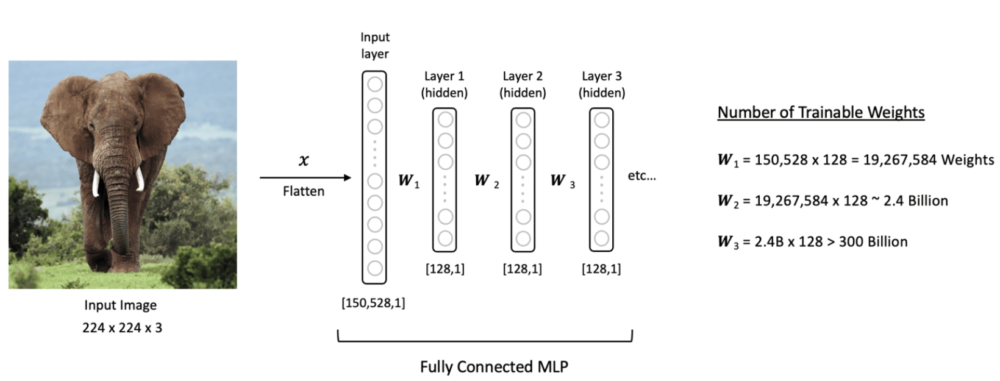Недостатки
- Количество параметров
- Структура данных никак не учитывается. Принцип локальности объектов.
Смысл операции свертки
 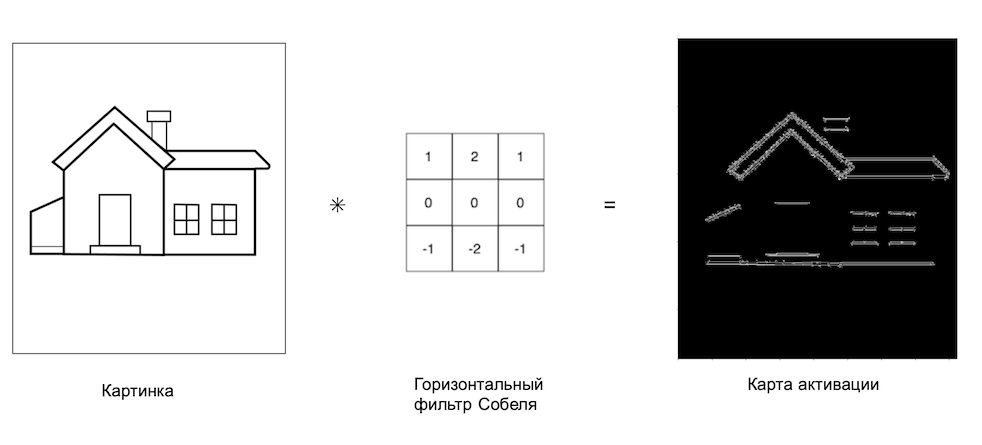
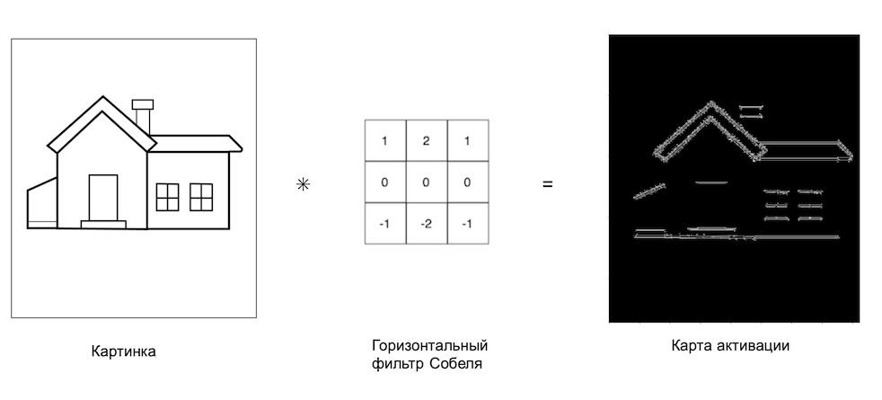
Смысл в нескольких слоях сверток
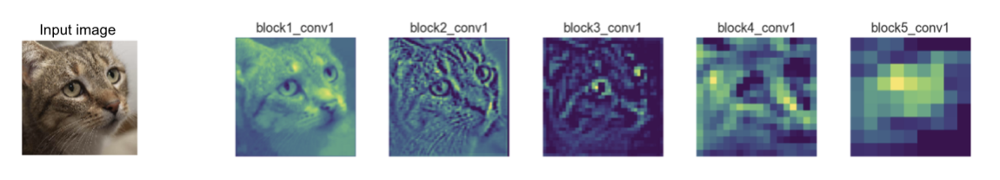Свертка Винограда
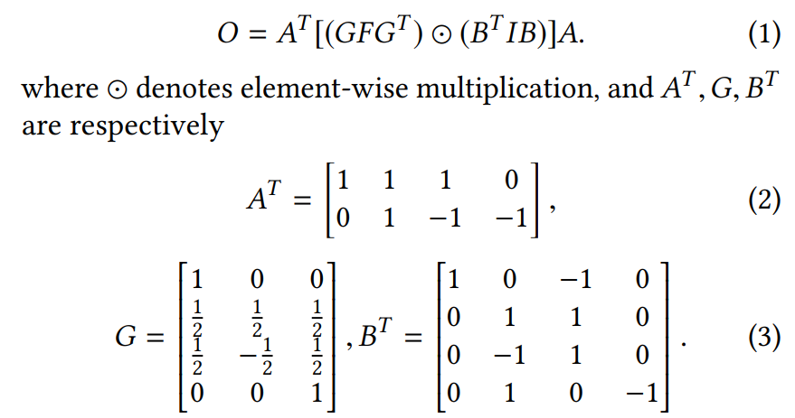Другие виды сверток
- Свертки с изменяемым размером (Dilated Convolutions)
- Групповые свертки (Grouped Convolutions)
- Трансформерные свертки (Attention-based Convolutions)
Как создавать нейронные сети?
Задача, данные, функция потерь
Решение задачи через оптимизацию
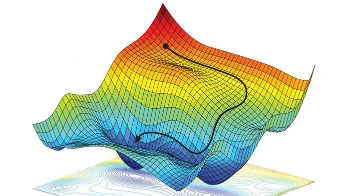
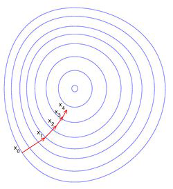
Вычисление градиента

Алгоритм обратного распространения ошибки (backward propagation)
Алгоритм обратного распространения ошибки (backward propagation)